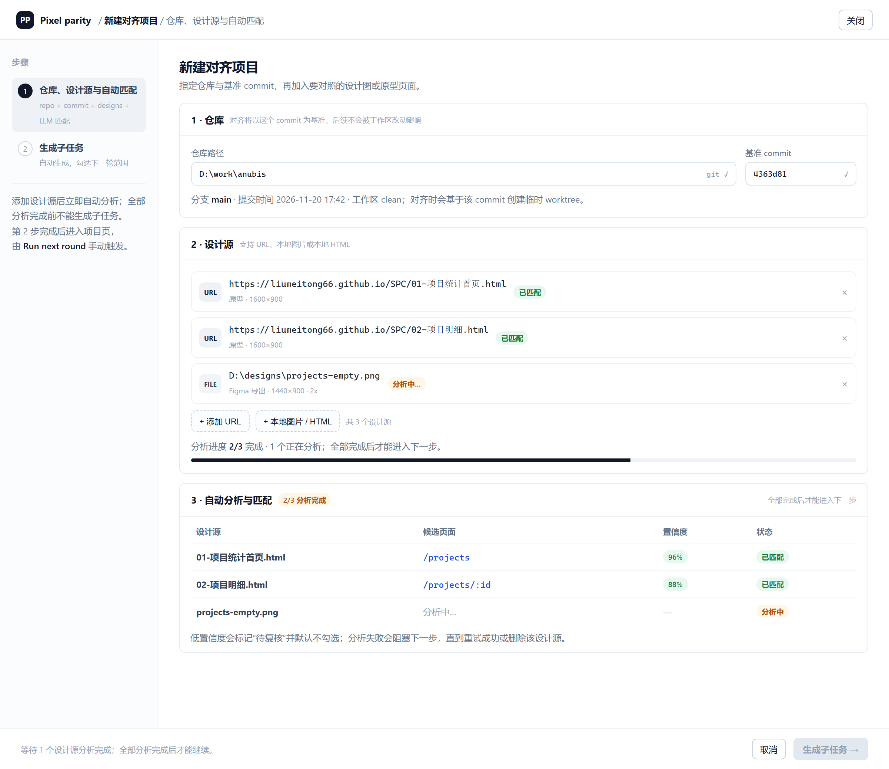
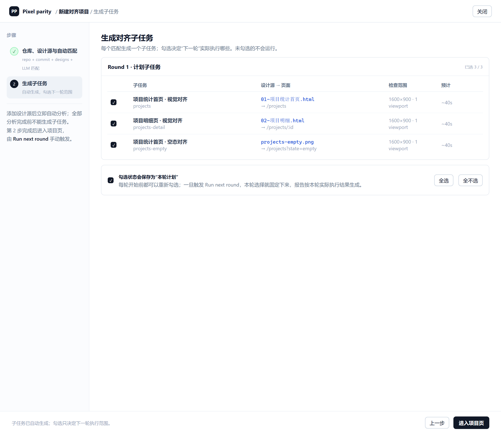
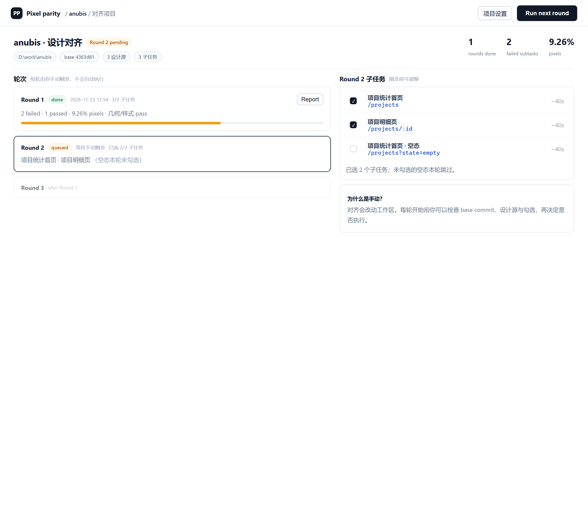
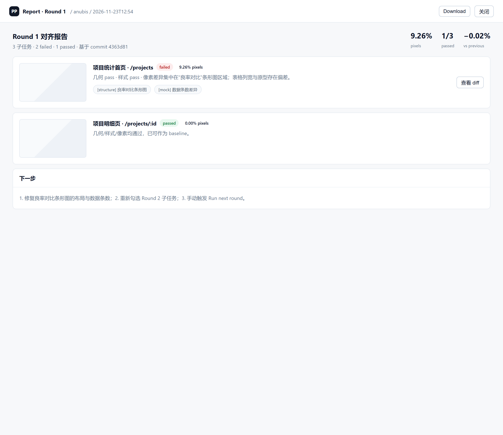

PixelParity · Design Document
项目式对齐流程（交互设计）
0. 一句话
把现在的“Task 列表”升级为 项目（Project）→ 轮次（Round）→ 子任务（Subtask） 三层： 一个项目绑定一个 repo 和一个 base commit，容纳多个设计源；LLM 把设计源匹配到前端页面并生成子任务； 每轮由用户手动触发，只执行本轮勾选的子任务；每轮结束生成可内嵌查看的报告。
1. 目标 / 非目标
目标
- 一个项目可以同时管理多个设计图/原型，不需要为每个页面手工建 Task；
- repo 有明确的 base commit，后续所有轮次都可追溯到同一基线；
- 设计源 → 前端页面的映射由 LLM 自动分析并生成，人可改选（可选，不阻塞流程）；
- 子任务是稳定实体，每轮通过勾选决定执行范围；
- 对齐不自动跑：必须点
Run next round才执行一轮； - 每轮结束生成报告，在 DSH 内置页面查看，也可下载；
- 用户仓库不被直接改动：项目使用基于 base commit 的独立 worktree。
非目标
- 不做定时/后台自动对齐；
- 不做“一个 repo 一个大 Task”的混合状态；
- 不在本轮设计里做多人协作/权限；
- 不保证 LLM 首次匹配一定正确，因此保留“改选页面”作为可选修正入口。
2. 核心概念
| 概念 | 说明 |
|---|---|
| Project | 一个 repo + 一个 base commit + 一组设计源 + 匹配关系 + 子任务 + 轮次历史 |
| DesignSource | 设计图/原型，支持 URL、本地图片、本地 HTML；创建时缓存快照与尺寸 |
| Match | 设计源 → 前端页面（route + component）的对应关系，含置信度与自动接受状态 |
| Subtask | 由 Match 生成的稳定对齐单元（一个设计源对应一个页面/状态）；带默认勾选 |
| Round | 一次手动触发的执行；包含本轮勾选的 Subtask 快照、执行结果、报告 |
| Report | 每轮结束生成的 HTML；内嵌查看 + 下载；按轮次归档 |
迁移关系：现有 Task 相当于一个 Subtask 的一次执行记录；Project 负责分组与轮次编排。
3. 交互预览
3.1 第 1 步：仓库、设计源与自动匹配

自动分析与匹配作为第 1 步的子步骤，不再单独占一个步骤。整个第 1 步在同一页内完成。预览图中 2/3 个设计源已完成，因此底部的“生成子任务”处于禁用态；全部分析完成后才启用。
1.1 仓库
- 必须是 git 仓库；右侧显示
git ✓，校验失败禁止下一步。 - 基准 commit 默认
HEAD，可填 SHA/tag/branch；必须是仓库内可解析的 commit。 - 显示分支、提交时间、工作区是否 clean；
- 对齐时基于该 commit 创建独立 worktree，不直接改用户工作区。
- 创建后 base commit 不可修改。
1.2 设计源
- 每行显示类型（URL/FILE）、位置、尺寸/倍率。
+ 添加 URL：支持http(s)原型页；+ 本地图片 / HTML：支持 png/jpg/webp/html，路径必须在允许的本地根内；- 每行可删除；重复地址提示去重；
- 添加时立即抓取一次，记录 viewport、标题、可访问性；失败的条目标记
unreachable，不阻塞其他源； - 所有设计源在项目目录下缓存快照（
sources/<id>.png），保证历史轮次可复现。
1.3 自动分析与匹配（添加设计源即触发）
- 每添加一个设计源，立即自动开始分析该源，不需要等项目创建完成，也不需要点“确认/分析”按钮。
- 多个设计源可以并行分析（默认并发 2–3，队列可见）；每个源独立经历：
uploaded → analyzing → matched | needs-review | unmatched | failed
- 页面内显示总进度（如
2/3 分析完成）和每个源的局部状态；底部的 生成子任务 在所有源分析完成前保持禁用，并在 footer 显示等待原因。 - “所有分析完成”的判定：每个设计源都到达
matched/needs-review/unmatched之一，且至少有一个可生成的子任务；analyzing、queued、failed都算未完成。 - 分析失败（网络/解析/LLM 错误）会阻塞下一步，直到：
- 重试成功；或
- 删除该设计源（其分析任务取消，子任务一并移除）。
- 删除设计源会同步删除其 Match/Subtask，并重新计算“是否全部完成”。
- 在第 1 步期间新增设计源，会再次禁用 生成子任务，直到新源分析完成。
“生成子任务”门禁
| 场景 | 按钮状态 |
|---|---|
| repo / base commit 未填或无效 | 禁用，提示补全仓库与 commit |
| 设计源正在抓取/排队 | 禁用，显示“N 个源等待分析” |
任一源处于 analyzing | 禁用，显示“N 个分析中” |
任一源处于 failed | 禁用，显示“重试或删除失败源” |
| 全部源终态，且有 ≥1 个子任务 | 启用 |
| 全部源终态，但无任何子任务 | 禁用，提示“没有可对齐的子任务” |
- 结果表：设计源 → 候选页面（route + 组件）→ 置信度 → 状态。
- 自动接受规则：
≥ 50%：接受最佳候选，生成子任务并默认勾选；< 50%：仍生成最佳候选子任务，标记 待复核，默认不勾选；- 完全没有候选：标记
unmatched，不生成子任务。 - “待复核”是终态，不阻塞流程；后续可在子任务页或项目设置里改选/删除。
- 展开行显示 LLM 依据（路由、组件、空态分支、尺寸匹配）。
自动执行时序：
填写 repo + base commit
→ 添加设计源（可多个）
→ 每个源立即排队：抓取/读取快照 → LLM 匹配 → 校验 route/component
→ 写入 Match；生成/更新 Subtask
→ 所有源到达终态（matched / needs-review / unmatched）
→ “生成子任务”按钮启用 → 进入第 2 步项目记录可以在进入第 1 步时先以 draft 保存，分析结果实时写入；生成子任务 是提交动作，不会重跑已完成的分析。
LLM 输入：
- 仓库路由表、页面组件路径、组件树/关键文本、空态/错误态分支；
- 设计源截图、DOM（原型 URL）、尺寸/viewport；
- 现有匹配作为上下文（增量分析）。
LLM 输出（结构化）：
{
"match": {
"sourceId": "src_01",
"route": "/projects",
"component": "apps/hub/src/views/ProjectStatsDesign.vue",
"state": "default",
"confidence": 0.96,
"rationale": "路由存在 /projects；页面标题与原型一致；尺寸 1600x900 匹配"
}
}规则：
- LLM 只能从仓库真实存在的 route/component 中选择，插件做二次校验；
- 一个设计源可匹配多个页面（例如同一页面的 default/empty 状态），生成多个候选；
- 自动接受结果持久化；人工改选是可选修正，不需要在流程里确认。
3.2 第 2 步：生成子任务与勾选计划

界面说明：
- 每个自动接受的 Match 生成一个 Subtask：名称、slug、设计源 → 页面、检查范围（viewport）、预计耗时。
- 每行前的 checkbox 决定 本轮 是否执行；置信度 ≥50% 的默认勾选，待复核的默认不勾选。
已选 3 / 3实时更新；全选 / 全不选快捷操作。- 进入项目页：Project 已在第 1 步创建；此步只确认本轮范围，仍不执行任何对齐。
勾选语义：
- 勾选状态保存为“下一轮计划”（
nextSelection）； - 每轮触发时把当前勾选快照写入该轮
selection，之后修改勾选只影响下一轮； - 报告会列出本轮未勾选（skipped）的子任务，避免误以为全部执行。
3.3 项目页：轮次 + 手动触发

界面说明：
- 顶部：项目名、
repo、base 4363d81、设计源数、子任务数。 - 右上角 Run next round：唯一执行入口；没有定时器、没有自动排队。
- 轮次列表：
queued / running / completed / failed；每轮显示时间、执行/跳过数、通过/失败、像素、报告入口。 - 右侧：下一轮子任务勾选（触发前可改）；未勾选显示为 skipped。
- 点击
Run next round后：
- 冻结本轮选择；
- 设置
Round.status = running； - 按选择顺序执行子任务；
- 完成后允许生成/查看报告。
执行模型（重要）：
- 一轮 = Agent 修复（LLM）+ 插件测量 的一次完整对齐 pass：
- 有上一轮报告/plan 时，Agent 先按 plan 在项目 worktree 内修改代码；
- 插件随后对每个子任务做一次测量并记录结果；
- 首轮没有历史 plan 时退化为“只测量”（建立基线）。
- 按钮只发起一轮，不会自动开始下一轮；下一轮由用户再次点击。
- 若当前没有可用 Agent，Round 可停在
awaiting-agent，只完成测量并出报告（可配置）。
并发与安全：
- 同一项目同一时间只允许一个 running round；
- 所有写入发生在项目独立 worktree，用户仓库保持 clean；
- 关闭 DSH 会中断当前轮；Round 标记
interrupted，不会自动恢复执行。
3.4 每轮报告：内嵌查看

界面说明：
- 报告是 按轮次 生成的 HTML，标题包含 Round 编号、时间、base commit。
- 顶部汇总：像素均值、通过数/总数、相对上一轮变化。
- 每个子任务一张卡：设计缩略图、route、状态、像素、几何/样式结论、主要差异、
查看 diff。 - 底部“下一步”：来自本轮的 findings，作为下一轮的修复计划。
Download下载 HTML；关闭返回项目页。- 报告只在
Round.status = completed后可生成；running/失败中断时按钮禁用。
3.5 视觉规范：浅色背景 + 深色控件（DSH 风格）
页面背景和卡片保持白/浅灰，按钮、图标、进度条、选中态使用近黑色，形成“白底黑控件”的 DSH 风格，而不是整体暗色主题。
| Token | 值 | 用途 |
|---|---|---|
--pp-bg | #eef2f7 | 应用背景 |
--pp-surface | #ffffff | 页面/抽屉底色 |
--pp-subtle | #fbfcfe | 侧栏、弱底色 |
--pp-border | #e5eaf1 | 卡片/分隔线 |
--pp-border-weak | #eef2f7 | 行分隔、底栏 |
--pp-text | #0f172a | 主文本 |
--pp-muted | #64748b | 次要文本 |
--pp-faint | #94a3b8 | 占位/时间戳 |
--pp-control | #111827 | 主按钮、图标、进度、选中 |
--pp-control-text | #ffffff | 深色控件上的文字 |
--pp-link | #1d4ed8 | route/链接 |
--pp-success | #15803d / bg #e8f8ef | 已匹配/通过 |
--pp-warning | #b45309 / bg #fff7e6 | 分析中/待复核 |
--pp-danger | #b91c1c / bg #fdecec | 失败 |
细节：
- 主按钮（Run next round / 生成子任务）为
#111827实心白字；次按钮白底、深色描边与深色文字； - 图标（刷新、关闭、诊断、添加）统一深色描边，不使用彩色图标；
- 进度条、checkbox、选中的步骤圆点使用近黑色；链接/route 用深蓝；
- 禁用态降为
#e2e8f0背景 +#94a3b8文本，footer 同时给出“等待 N 个源分析完成”的原因； - 状态 pill 用浅色底 + 深色文字，保持白底页面的轻盈感；
- 字号：正文 13px、辅助 12px、标签 11px；H1 18px，卡片标题 13px；表格 12px。
- 控件：按钮高约 30px（padding 5–6px × 10–12px），输入框 32px，圆角 6px；卡片圆角 8px。
- 表格行高 1.5，图片/缩略图圆角 5–6px，整体使用 DSH 的 8px 间距栅格。
4. 数据模型与文件布局
data/projects/<projectId>/
project.json # repo, baseCommit, sources, matches, subtasks, rounds
sources/ # 设计源缓存
worktree/ # 基于 baseCommit 的 git worktree（对齐写入这里）
rounds/
round-1/
round.json
report.html
assets/
round-2/...project.json 摘要：
{
"version": 1,
"id": "proj-20261123-01",
"name": "anubis · 设计对齐",
"repo": "D:\\work\\anubis",
"baseCommit": "4363d81",
"status": "ready",
"sources": [
{ "id": "src_01", "kind": "url", "location": "https://.../01-项目统计首页.html", "viewport": { "width": 1600, "height": 900 } },
{ "id": "src_02", "kind": "file", "location": "D:\\designs\\projects-empty.png", "viewport": { "width": 1440, "height": 900 }, "scale": 2 }
],
"matches": [
{ "sourceId": "src_01", "route": "/projects", "component": "apps/hub/src/views/ProjectStatsDesign.vue", "state": "default", "confidence": 0.96, "status": "confirmed" }
],
"subtasks": [
{ "id": "projects", "sourceId": "src_01", "title": "项目统计首页 · 视觉对齐", "route": "/projects", "state": "default", "defaultSelected": true }
],
"nextSelection": ["projects", "projects-detail"],
"rounds": [
{
"id": "round-1",
"number": 1,
"status": "completed",
"selection": ["projects", "projects-detail", "projects-empty"],
"skipped": [],
"startedAt": "2026-11-23T12:54:00Z",
"finishedAt": "2026-11-23T12:58:00Z",
"reportPath": "rounds/round-1/report.html"
}
]
}状态：
Project: draft → analyzing → ready → running → ready
Round: queued → running → completed | failed | interrupted
Report: pending → generated5. 工具与接口
工具（给 Agent）
parity_project({ action: "create", repo, baseCommit, name }) // 创建后自动分析
parity_project({ action: "add-source", projectId, kind: "url"|"file", location })
parity_project({ action: "analyze", projectId }) // 手动重试/重算（可选）
parity_project({ action: "confirm", projectId, matches }) // 可选：人工改选
parity_project({ action: "plan", projectId }) // 自动生成；可重新生成
parity_project({ action: "status", projectId })
parity_project({ action: "run-round", projectId }) // 手动触发一轮
parity_project({ action: "report", projectId, round })
parity_project({ action: "delete", projectId }) // 停止当前轮、删除 worktree 与数据Host 接口（给面板）
| 方法 | 路径 | 说明 |
|---|---|---|
| GET | /pixel-parity/projects | 项目列表与摘要 |
| POST | /pixel-parity/project/create | 创建项目 |
| POST | /pixel-parity/project/source | 添加设计源 |
| POST | /pixel-parity/project/analyze | 触发分析 |
| POST | /pixel-parity/project/confirm | 可选：人工改选匹配 |
| POST | /pixel-parity/project/plan | 生成子任务 |
| POST | /pixel-parity/project/round | 手动发起一轮 |
| GET | /pixel-parity/project/round/job | 轮次执行状态 |
| GET | /pixel-parity/project/report?round= | 内嵌报告 HTML |
6. 关键交互细节
- base commit 锁定：项目创建后 baseCommit 不可改；要换基线必须新建项目（避免历史报告失真）。
- worktree 隔离：所有轮次写入项目 worktree；报告记录
git diff --stat baseCommit，用户仓库保持原状。 - 设计源快照：创建/重新抓取时保存图片与 metadata；报告使用快照，不重新访问 URL。
- 匹配置信度：分析自动完成；低置信度条目标记“待复核”并默认不勾选，不阻塞后续步骤，也允许随时改选。
- 勾选快照：点击 Run next round 的瞬间冻结选择；执行中不可改本轮选择，只能改下一轮。
- 手动唯一入口：取消自动轮询/自动续跑；
Run next round是唯一触发点。 - 报告时序：轮次完成后才允许生成报告；running 时按钮禁用并给出 hover 原因。
- 删除项目：二次确认；若有 running round，先取消再删除 worktree 与项目目录。
- 失败处理：单个子任务失败不阻塞其他子任务；轮次结束标记
failed仍可生成报告。 - 演示数据：报告/预览中的 9.26% 等数字来自当前 anubis 原型，仅作示意。
7. 与当前实现的关系
- 当前
Task（一次测量）可保留为内部执行单元：一个 Round 下每个选中的 Subtask 生成/关联一个 Task 执行记录； - 当前“Repo 分组 + Run all”是过渡形态，后续由 Project 页替代：
- Project 固定 repo/base commit；
- Round 取代“Run all”；
- 报告从“每 Task 一份”升级为“每轮一份聚合报告”，子任务结果内嵌。
- 已有
data/tasks可保留用于独立快速检查；项目式流程是上层编排，不强制迁移旧任务。
8. 验收标准
- <span class="todo">☐</span> 可以创建项目：repo 校验、base commit 校验、添加 URL/本地设计源；
- <span class="todo">☐</span> 每添加一个设计源立即自动分析，无需再点“确认匹配”或“分析”；
- <span class="todo">☐</span> 所有设计源分析完成（matched / needs-review / unmatched）前，“生成子任务”保持禁用；新增源会再次禁用；分析失败会阻塞直到重试成功或删除该源；
- <span class="todo">☐</span> 低置信度条目标记待复核且默认不勾选，不阻塞流程，可随时改选；
- <span class="todo">☐</span> 子任务列表由分析结果自动生成，勾选状态可保存并影响下一轮；
- <span class="todo">☐</span> 项目页展示历史轮次；未点
Run next round不会执行任何对齐； - <span class="todo">☐</span> 每点一次只执行一轮，且本轮只跑勾选的子任务，报告记录 skipped；
- <span class="todo">☐</span> 轮次完成后可生成报告并在 DSH 内嵌页查看/下载；
- <span class="todo">☐</span> 删除项目会停止运行中的轮次并清理 worktree/报告；
- <span class="todo">☐</span> 用户仓库在工作区保持 clean，所有改动落在项目 worktree；
- <span class="todo">☐</span> 整个流程使用白底 + 深色控件的 DSH 风格，禁用态有明确原因。
9. 风险与开放问题
| 风险 | 处理 |
|---|---|
| LLM 页面匹配错误 | 自动接受最佳候选 + 待复核标记 + 可改选 |
| 原型是动态数据/需登录 | 设计源抓取支持 storageState；报告记录抓取条件 |
| 本地路径越权 | 限定允许根目录，拒绝任意系统路径 |
| worktree 磁盘占用 | 项目删除时清理；可配置保留轮次数 |
| 一轮内“LLM 修复”依赖 Agent 可用性 | 无 Agent 时退化为测量+报告，状态标注 |
| base commit 后仓库有未提交改动 | 项目只用 worktree，忽略用户工作区脏状态 |
待定：是否需要“Round 0 基线测量”单独展示；报告是保留所有轮次还是只保留最近 N 轮；项目 worktree 是否允许用户手动打开编辑。